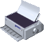

～終わりに～
最後まで見ていただき、ありがとうございます。
こんな個人的趣味を紹介してるサイトなんて人気でないことは承知の上で作っています。
ちなみに1台目のPCは自分で分解して壊しました。なのでスペックダウンしています。（なにしとんねん）
知らん子供のサイトですが、応援よろしくお願いします。
またどこかにこのサイトの情報を載せてもかまいません。
当たり前ですがコピーをネットに載せてはいけません。
改めて、最後まで見てくれてありがとうございます。
それでは。
2026/01/27 作成(ver.1.0)
2026/01/28 更新(ver1.1)
2026/02/19 更新(ver2.0)
2026/06/16 更新(ver3.0)
2026/06/23 更新(ver.4.0)
Copyright 2026 masaweb All Rights Reserved.